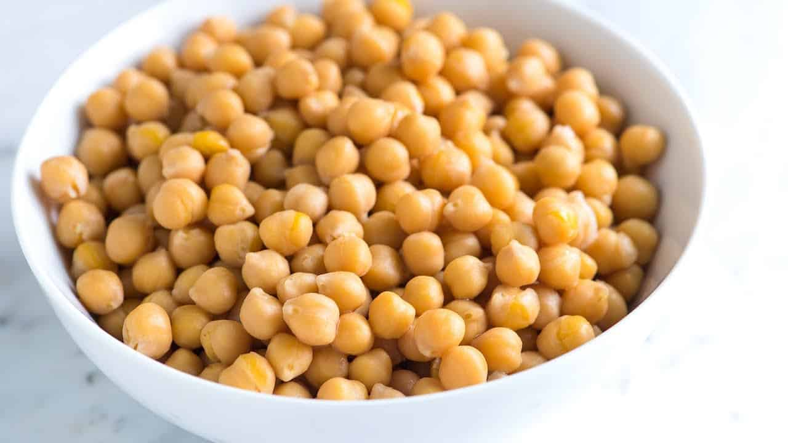
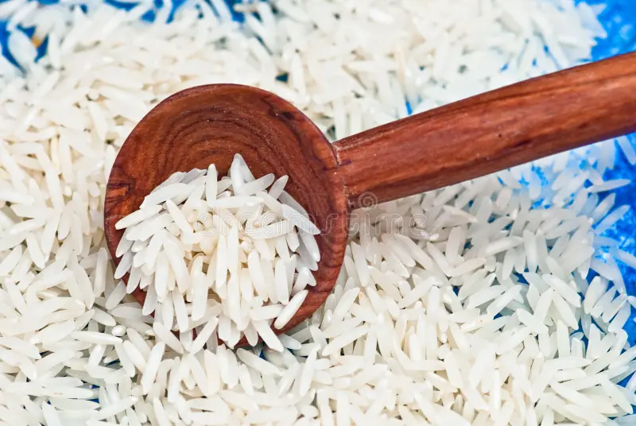
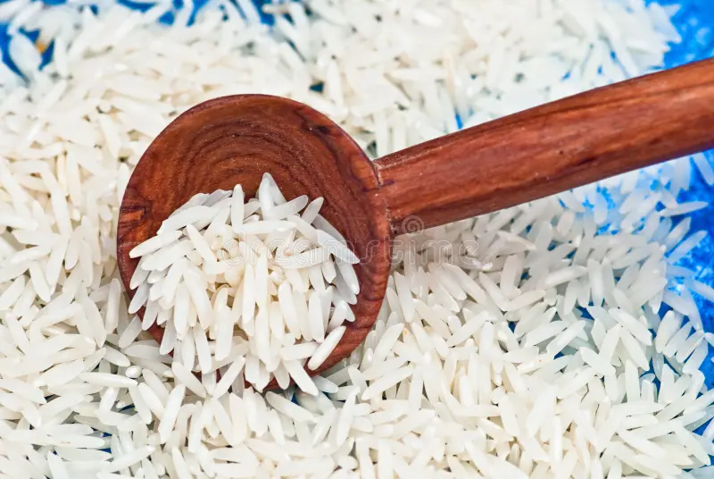
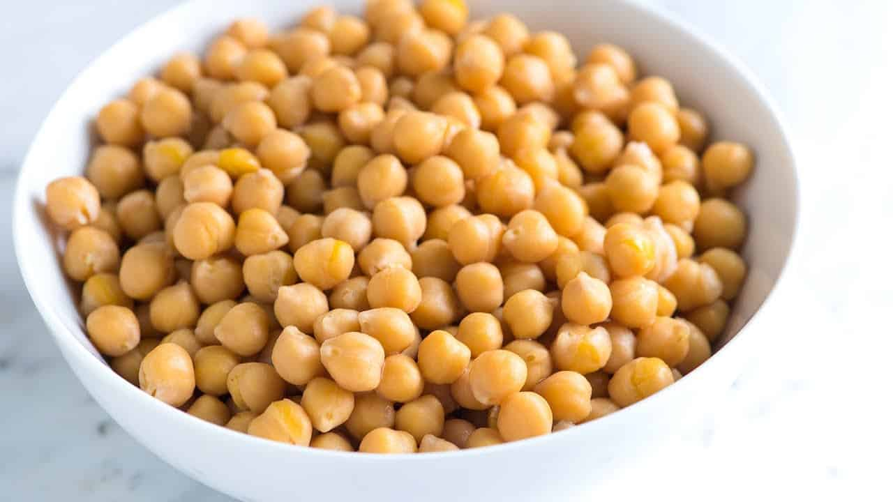
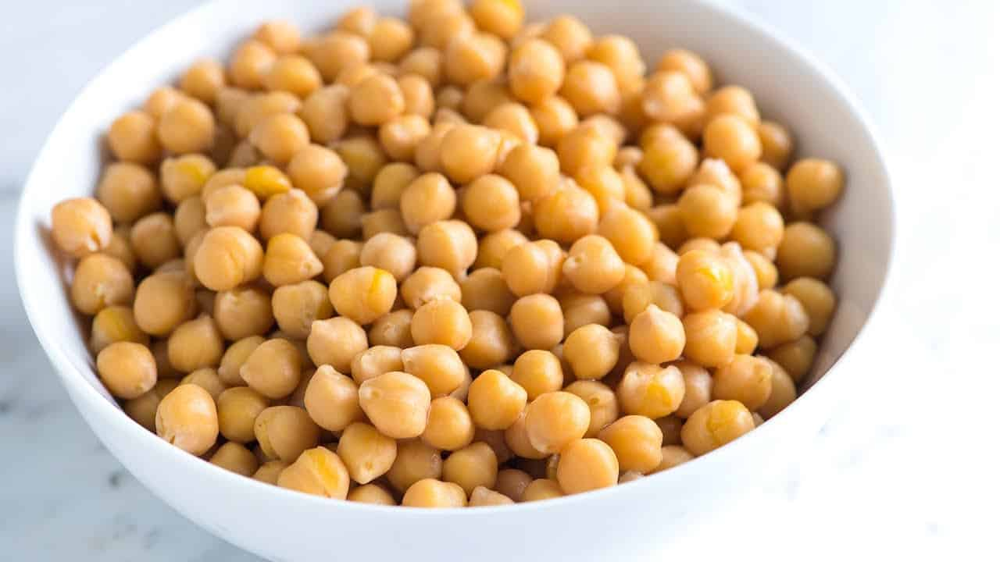

Choose a suitable field with well-drained soil. Rice requires a lot of water, so the field
should be
able to
retain water without becoming waterlogged.
Plow the field to break up the soil and create a fine seedbed.
Level the field to ensure uniform water distribution during cultivation.
Seedbed Preparation:
Prepare a seedbed either on the same field or a separate location. This is where the rice seeds
will be
sown and
germinated before transplanting.
Sow the rice seeds in rows, ensuring proper spacing.
Seed Germination:
Keep the seedbed adequately watered to facilitate germination.
Monitor the seedlings for pests and diseases, and take appropriate measures if necessary.
Nursery Maintenance:
Once the rice seedlings have reached a suitable height (usually a few inches), they are ready
for
transplanting.
Maintain the nursery by providing sufficient water and protecting the seedlings from pests.
Transplanting:
Transplant the seedlings from the nursery to the main field. This is typically done when the
seedlings
have 3-4
leaves.
Ensure proper spacing between the transplanted seedlings to allow for healthy growth.
Water Management:
Rice requires a lot of water for optimal growth. Maintain a consistent water level in the field,
especially
during the growing season.
In some cases, farmers use traditional flood irrigation methods, while others may use more modern
techniques
such as drip or sprinkler irrigation.
Fertilization:
Apply fertilizers based on soil testing and the specific nutrient requirements of rice. Common
fertilizers
include nitrogen, phosphorus, and potassium.
Harvesting:
Harvesting is typically done when the rice grains have matured and turned golden brown.
Use sickles or combine harvesters for large-scale operations.
Drying and Threshing:
Dry the harvested rice in the sun or using mechanical dryers.
Once dried, thresh the rice to separate the grains from the straw.
Milling and Storage:
Mill the rice to remove the outer husk, bran, and germ.
Store the processed rice in a cool, dry place.
हिंदी
भूमि की तैयारी:
अच्छी जल निकास वाली मिट्टी वाला उपयुक्त खेत चुनें। चावल के लिए बहुत अधिक पानी की आवश्यकता
होती है,
इसलिए खेत
को जलभराव के बिना पानी बनाए रखने में सक्षम होना चाहिए।
मिट्टी को तोड़ने और बढ़िया बीजभूमि बनाने के लिए खेत की जुताई करें।
खेती के दौरान समान जल वितरण सुनिश्चित करने के लिए खेत को समतल करें।
बीज तैयार करना:
उ
सी खेत में या अलग स्थान पर बीज क्यारी तैयार करें। यहीं पर चावल के बीज बोए जाएंगे और रोपाई
से पहले
अंकुरित किए
जाएंगे।
उचित दूरी सुनिश्चित करते हुए, चावल के बीज पंक्तियों में बोएं।
बीज अंकुरण:
अंकुरण को सुविधाजनक बनाने के लिए बीज क्यारी को पर्याप्त पानी देते रहें।
कीटों और बीमारियों के लिए पौध की निगरानी करें और यदि आवश्यक हो तो उचित उपाय करें।
नर्सरी रखरखाव:
एक बार जब चावल के पौधे उपयुक्त ऊंचाई (आमतौर पर कुछ इंच) तक पहुंच जाते हैं, तो वे रोपाई के
लिए तैयार हो
जाते
हैं।
पर्याप्त पानी उपलब्ध कराकर और पौधों को कीटों से बचाकर नर्सरी का रखरखाव करें।
प्रत्यारोपण:
पौध को नर्सरी से मुख्य खेत में रोपें। यह आमतौर पर तब किया जाता है जब पौधों में 3-4 पत्तियाँ
हों।
स्वस्थ विकास के लिए प्रत्यारोपित पौधों के बीच उचित दूरी सुनिश्चित करें।
जल प्रबंधन:
चावल के सर्वोत्तम विकास के लिए बहुत अधिक पानी की आवश्यकता होती है। खेत में लगातार जल स्तर
बनाए रखें,
खासकर
बढ़ते मौसम के दौरान।
कुछ मामलों में, किसान पारंपरिक बाढ़ सिंचाई विधियों का उपयोग करते हैं, जबकि अन्य अधिक आधुनिक तकनीकों
जैसे ड्रिप
या स्प्रिंकलर सिंचाई का उपयोग कर सकते हैं।
निषेचन:
मिट्टी परीक्षण और चावल की विशिष्ट पोषक तत्वों की आवश्यकताओं के आधार पर उर्वरकों का प्रयोग
करें।
सामान्य
उर्वरकों में नाइट्रोजन, फास्फोरस और पोटेशियम शामिल हैं।
खरपतवार नियंत्रण:
चावल के खेत को खरपतवारों से मुक्त रखें, क्योंकि वे पोषक तत्वों और सूरज की रोशनी के लिए चावल
के पौधों
से
प्रतिस्पर्धा कर सकते हैं।
खरपतवार नियंत्रण के लिए हाथ से निराई-गुड़ाई या शाकनाशी का उपयोग किया जा सकता है।
कीट एवं रोग प्रबंधन:
कीटों और बीमारियों के लिए फसल की नियमित निगरानी करें।
आवश्यकतानुसार कीटनाशक या अन्य नियंत्रण उपाय लागू करें।
कटाई:
कटाई आमतौर पर तब की जाती है जब चावल के दाने परिपक्व हो जाएं और सुनहरे भूरे रंग के हो जाएं।
बड़े पैमाने पर कार्यों के लिए दरांती या कंबाइन हार्वेस्टर का उपयोग करें।
सुखाना और गहाई करना:
कटे हुए चावल को धूप में या यांत्रिक ड्रायर का उपयोग करके सुखाएं।
एक बार सूख जाने पर, चावल को भूसे से अनाज को अलग करने के लिए पीस लें।
मिलिंग और भंडारण:
बाहरी भूसी, चोकर और रोगाणु को हटाने के लिए चावल को पीस लें।
प्रसंस्कृत चावल को ठंडी, सूखी जगह पर रखें।
सुनना
2. BARLEY / 2. जौ
ENGLISH
Selection of Variety:
Choose a barley variety suitable for the local climate and soil conditions. In Haryana, varieties like
RD 2035, BH 902, and BH 75 are commonly grown.
Land Preparation:
Prepare the land by plowing and harrowing to achieve a fine seedbed. This helps in better germination
and root development.
Sowing Time:
Barley is typically sown in the Rabi season, which occurs from October to December in Haryana. The exact
timing may vary based on local climatic conditions.
Seed Rate and Sowing Depth:
Sow the barley seeds at the recommended rate (around 80-100 kg/ha) and at a depth of 5-7 cm in
well-prepared soil.
Spacing:
Maintain proper row-to-row and plant-to-plant spacing to allow for adequate sunlight, air circulation,
and ease of cultivation.
Fertilization:
Apply fertilizers based on soil testing recommendations. Barley generally requires nitrogen, phosphorus,
and potassium for optimal growth.
Irrigation:
Provide sufficient irrigation, especially during critical growth stages like germination and
grain-filling. Barley is relatively drought-tolerant, but proper moisture is essential.
Weed Control:
Keep the field weed-free through manual or chemical weed control methods. Barley is sensitive to weed
competition during the initial growth stages.
Disease and Pest Management:
Monitor the crop for common barley diseases and pests, such as rust, smut, aphids, and rodents. Apply
appropriate pesticides if necessary.
Harvesting:
Harvest barley when the crop is mature, and the moisture content of grains is suitable for storage.
Harvesting is typically done using combine harvesters.
Threshing and Winnowing:
Separate the grains from the straw through threshing. Winnowing helps remove chaff and other impurities
from the harvested barley.
Storage:
Store the harvested barley in proper conditions to prevent moisture absorption and insect infestation.
Adequate storage facilities are crucial to maintaining grain quality.
Post-Harvest Management:
After harvesting, consider rotating crops to prevent disease buildup and maintain soil fertility for
subsequent crops.
हिंदी
किस्म का चयन:
स्थानीय जलवायु और मिट्टी की स्थिति के लिए उपयुक्त जौ की किस्म चुनें। हरियाणा में, आरडी 2035, बीएच
902 और बीएच 75 जैसी किस्में आमतौर पर उगाई जाती हैं।
भूमि की तैयारी:
अच्छी बीजभूमि प्राप्त करने के लिए जुताई और हैरो चलाकर भूमि तैयार करें। इससे बेहतर अंकुरण और जड़
विकास में मदद मिलती है.
बुआई का समय:
जौ आमतौर पर रबी सीज़न में बोया जाता है, जो हरियाणा में अक्टूबर से दिसंबर तक होता है। स्थानीय जलवायु
परिस्थितियों के आधार पर सटीक समय भिन्न हो सकता है।
बीज दर और बुआई की गहराई:
जौ के बीज अनुशंसित दर (लगभग 80-100 किग्रा/हेक्टेयर) पर और अच्छी तरह से तैयार मिट्टी में 5-7 सेमी की
गहराई पर बोएं।
रिक्ति:
पर्याप्त धूप, वायु संचार और खेती में आसानी के लिए पंक्ति-से-पंक्ति और पौधे से पौधे के बीच उचित दूरी
बनाए रखें।
निषेचन:
मृदा परीक्षण की सिफारिशों के आधार पर उर्वरकों का प्रयोग करें। इष्टतम विकास के लिए जौ को आमतौर पर
नाइट्रोजन, फास्फोरस और पोटेशियम की आवश्यकता होती है।
सिंचाई:
पर्याप्त सिंचाई प्रदान करें, विशेष रूप से अंकुरण और अनाज भरने जैसे महत्वपूर्ण विकास चरणों के दौरान।
जौ अपेक्षाकृत सूखा-सहिष्णु है, लेकिन उचित नमी आवश्यक है।
खरपतवार नियंत्रण:
मैनुअल या रासायनिक खरपतवार नियंत्रण विधियों के माध्यम से खेत को खरपतवार मुक्त रखें। प्रारंभिक विकास
चरणों के दौरान जौ खरपतवार प्रतिस्पर्धा के प्रति संवेदनशील है।
रोग एवं कीट प्रबंधन:
जौ की सामान्य बीमारियों और कीटों, जैसे कि जंग, स्मट, एफिड्स और कृंतकों के लिए फसल की निगरानी करें।
यदि आवश्यक हो तो उचित कीटनाशकों का प्रयोग करें।
कटाई:
जब फसल पक जाए और अनाज में नमी की मात्रा भंडारण के लिए उपयुक्त हो तब जौ की कटाई करें। कटाई आमतौर पर
कंबाइन हार्वेस्टर का उपयोग करके की जाती है।
थ्रेशिंग और विनोइंग:
मड़ाई करके अनाज को भूसे से अलग कर लें। विनोइंग से कटे हुए जौ से भूसी और अन्य अशुद्धियाँ निकालने में
मदद मिलती है।
भंडारण:
नमी अवशोषण और कीड़ों के संक्रमण को रोकने के लिए कटाई की गई जौ को उचित परिस्थितियों में संग्रहित
करें। अनाज की गुणवत्ता बनाए रखने के लिए पर्याप्त भंडारण सुविधाएं महत्वपूर्ण हैं।
कटाई उपरांत प्रबंधन:
कटाई के बाद, बीमारियों को फैलने से रोकने और बाद की फसलों के लिए मिट्टी की उर्वरता बनाए रखने के लिए
फसलों को घुमाने पर विचार करें।
सुनना
3. TEA / 3 .चाय
ENGLISH
Site Selection:
Choose a location that has the right climate and soil conditions for tea cultivation. Tea plants thrive
in tropical and subtropical regions with well-drained, acidic soils.
Altitude also plays a crucial role in tea cultivation. Higher altitudes often produce better-quality tea
due to cooler temperatures and slower growth.
Preparing the Land:
Clear the land of any debris, rocks, or other obstacles.
Soil preparation may involve tilling and adding organic matter to improve soil fertility and structure.
Propagation:
Tea plants are typically propagated from seeds or cuttings.
Seeds can be sown directly into nurseries or trays filled with a suitable growing medium.
Cuttings are taken from healthy, mature plants and rooted in a nursery before transplanting to the
field.
Nursery Care:
Provide optimal conditions in the nursery for seed germination or rooting of cuttings.
Maintain adequate moisture levels and protection from harsh sunlight.
Transplant seedlings or rooted cuttings to the field when they are strong enough.
Planting:
Tea plants are typically planted in rows with sufficient spacing to allow for proper growth and ease of
harvesting.
Planting is usually done at the onset of the rainy season to ensure adequate water for establishment.
Maintenance:
Weed control is essential to prevent competition for nutrients and water.
Fertilization may be necessary to ensure healthy growth, with the specific requirements varying
depending on soil conditions and plant health.
Irrigation may be required during dry periods, especially for newly planted tea fields.
Pruning:
Regular pruning helps maintain the desired shape of the tea bushes and encourages new growth.
Pruning also facilitates harvesting by keeping the bushes at a manageable height.
Pest and Disease Management:
Monitor for pests and diseases regularly and take appropriate measures to control them, which may
include the use of organic or chemical pesticides.
Integrated pest management (IPM) practices are often employed to minimize the use of synthetic
chemicals.
Harvesting:
Tea leaves are typically harvested by hand, although mechanical harvesters may also be used in some
large-scale operations.
The timing of harvesting depends on the type of tea being produced and can vary from a few weeks to
several months after the new flush of growth appears.
Processing:
After harvesting, the tea leaves undergo processing, which typically involves withering, rolling,
oxidation, and drying.
The specific processing methods vary depending on the type of tea being produced (e.g., green tea, black
tea, oolong tea).
Packaging and Distribution:
Once processed, the tea is packaged into various formats (e.g., loose leaf, tea bags) and distributed to
consumers through various channels, including wholesale markets, retailers, and online platforms.
हिंदी
आईटी चयन:
चाय की खेती के लिए ऐसा स्थान चुनें जहां की जलवायु और मिट्टी की स्थिति उपयुक्त हो। चाय के पौधे अच्छी
जल निकासी वाली, अम्लीय मिट्टी वाले उष्णकटिबंधीय और उपोष्णकटिबंधीय क्षेत्रों में पनपते हैं।
चाय की खेती में ऊंचाई भी महत्वपूर्ण भूमिका निभाती है। अधिक ऊंचाई पर ठंडे तापमान और धीमी वृद्धि के
कारण अक्सर बेहतर गुणवत्ता वाली चाय का उत्पादन होता है।
भूमि तैयार करना:
किसी भी मलबे, चट्टानों या अन्य बाधाओं से भूमि साफ़ करें।
मिट्टी की तैयारी में मिट्टी की उर्वरता और संरचना में सुधार के लिए जुताई और कार्बनिक पदार्थ मिलाना
शामिल हो सकता है।
प्रसार:
चाय के पौधों को आम तौर पर बीज या कलमों से प्रचारित किया जाता है।
बीजों को सीधे नर्सरी या उपयुक्त विकास माध्यम से भरी ट्रे में बोया जा सकता है।
स्वस्थ, परिपक्व पौधों से कटिंग ली जाती है और खेत में रोपाई से पहले नर्सरी में जड़ दी जाती है।
नर्सरी देखभाल:
बीज के अंकुरण या कलमों को जड़ से उखाड़ने के लिए नर्सरी में इष्टतम स्थितियाँ प्रदान करें।
पर्याप्त नमी का स्तर बनाए रखें और तेज़ धूप से सुरक्षा प्रदान करें।
जब पौधे पर्याप्त रूप से मजबूत हो जाएं तो उन्हें खेत में रोपें।
रोपण:
चाय के पौधों को आम तौर पर उचित विकास और कटाई में आसानी के लिए पर्याप्त दूरी के साथ पंक्तियों में
लगाया जाता है।
स्थापना के लिए पर्याप्त पानी सुनिश्चित करने के लिए आमतौर पर पौधारोपण बरसात के मौसम की शुरुआत में
किया जाता है।
रखरखाव:
पोषक तत्वों और पानी के लिए प्रतिस्पर्धा को रोकने के लिए खरपतवार नियंत्रण आवश्यक है।
स्वस्थ विकास सुनिश्चित करने के लिए निषेचन आवश्यक हो सकता है, विशिष्ट आवश्यकताएं मिट्टी की स्थिति और
पौधों के स्वास्थ्य के आधार पर भिन्न होती हैं।
शुष्क अवधि के दौरान सिंचाई की आवश्यकता हो सकती है, विशेषकर नए लगाए गए चाय के खेतों के लिए।
छंटाई:
नियमित छंटाई चाय की झाड़ियों के वांछित आकार को बनाए रखने में मदद करती है और नई वृद्धि को प्रोत्साहित
करती है।
छंटाई झाड़ियों को प्रबंधनीय ऊंचाई पर रखकर कटाई की सुविधा भी देती है।
कीट एवं रोग प्रबंधन:
कीटों और बीमारियों की नियमित रूप से निगरानी करें और उन्हें नियंत्रित करने के लिए उचित उपाय करें,
जिसमें जैविक या रासायनिक कीटनाशकों का उपयोग शामिल हो सकता है।
सिंथेटिक रसायनों के उपयोग को कम करने के लिए अक्सर एकीकृत कीट प्रबंधन (आईपीएम) प्रथाओं को नियोजित
किया जाता है।
कटाई:
चाय की पत्तियों की कटाई आमतौर पर हाथ से की जाती है, हालाँकि कुछ बड़े पैमाने के कार्यों में यांत्रिक
हार्वेस्टर का भी उपयोग किया जा सकता है।
कटाई का समय चाय के उत्पादन के प्रकार पर निर्भर करता है और विकास की नई लहर दिखाई देने के बाद कुछ
हफ्तों से लेकर कई महीनों तक भिन्न हो सकता है।
प्रसंस्करण:
कटाई के बाद, चाय की पत्तियां प्रसंस्करण से गुजरती हैं, जिसमें आम तौर पर सूखना, लुढ़कना, ऑक्सीकरण और
सूखना शामिल होता है।
विशिष्ट प्रसंस्करण विधियाँ उत्पादित की जा रही चाय के प्रकार (जैसे, हरी चाय, काली चाय, ऊलोंग चाय) के
आधार पर भिन्न होती हैं।
पैकेजिंग और वितरण:
एक बार संसाधित होने के बाद, चाय को विभिन्न प्रारूपों (जैसे, खुली पत्ती, चाय बैग) में पैक किया जाता
है और थोक बाजारों, खुदरा विक्रेताओं और ऑनलाइन प्लेटफार्मों सहित विभिन्न चैनलों के माध्यम से
उपभोक्ताओं को वितरित किया जाता है।
सुनना
4. LENTILS / 4. मसूर
ENGLISH
Variety Selection:
Choose lentil varieties that are well-adapted to the local climate and soil conditions in Haryana.
Popular varieties include PL 406, PL 639, and L 4076.
Land Preparation:
Prepare the land by plowing and harrowing to create a fine seedbed. Lentils prefer well-drained soils,
and good land preparation promotes proper germination.
Sowing Time:
Lentils are typically grown as a Rabi (winter) crop in Haryana, with sowing done from October to
December. Adjust the timing based on local weather conditions.
Seed Rate and Spacing:
Sow lentil seeds at the recommended rate, usually around 30-40 kg/ha. Maintain proper row spacing (about
30-40 cm) and plant spacing (about 5-10 cm).
Fertilization:
Apply fertilizers based on soil testing results. Lentils generally require a balanced fertilizer with
nitrogen, phosphorus, and potassium.
Irrigation:
Provide sufficient irrigation, especially during critical growth stages like flowering and pod
development. Lentils benefit from adequate moisture but are relatively drought-tolerant.
Weed Control:
Keep the lentil field weed-free through manual or chemical weed control methods. Weeds can compete with
lentils for nutrients and water.
Disease and Pest Management:
Monitor the crop for common diseases such as rust and pests like aphids. Implement integrated pest
management (IPM) practices and use pesticides judiciously if needed.
Flowering and Pod Development:
Monitor the flowering stage, which is crucial for pod development. Proper pest and disease management
during this period are essential.
Harvesting:
Harvest lentils when the plants have matured, and the pods have turned yellow or brown. This usually
occurs around 90-120 days after sowing. Lentils are typically harvested manually or using small
machinery.
Threshing:
Separate the lentil grains from the pods through threshing. This can be done manually or using
small-scale mechanical threshers.
Winnowing:
Winnow the lentil grains to remove chaff and other impurities.
Storage:
Store the harvested lentils in proper conditions to prevent moisture absorption and insect infestation.
Adequate storage facilities are crucial to maintaining grain quality.
Post-Harvest Management:
After harvesting, consider rotating crops to prevent disease buildup and maintain soil fertility for
subsequent crops.
हिंदी
किस्म का चयन:
मसूर की ऐसी किस्में चुनें जो हरियाणा की स्थानीय जलवायु और मिट्टी की स्थितियों के अनुकूल हों।
लोकप्रिय किस्मों में पीएल 406, पीएल 639 और एल 4076 शामिल हैं।
भूमि की तैयारी:
अच्छी बीज क्यारी बनाने के लिए जुताई और हैरो चलाकर भूमि तैयार करें। मसूर की फसल अच्छी जल निकास वाली
मिट्टी को पसंद करती है और भूमि की अच्छी तैयारी उचित अंकुरण को बढ़ावा देती है।
बुआई का समय:
हरियाणा में मसूर आमतौर पर रबी (सर्दियों) की फसल के रूप में उगाई जाती है, जिसकी बुआई अक्टूबर से
दिसंबर तक की जाती है। स्थानीय मौसम की स्थिति के आधार पर समय समायोजित करें।
बीज दर एवं अंतर:
मसूर के बीज अनुशंसित दर पर बोएं, आमतौर पर लगभग 30-40 किग्रा/हेक्टेयर। पंक्तियों की उचित दूरी (लगभग
30-40 सेमी) और पौधों की दूरी (लगभग 5-10 सेमी) बनाए रखें।
निषेचन:
मृदा परीक्षण के परिणामों के आधार पर उर्वरकों का प्रयोग करें। दाल को आमतौर पर नाइट्रोजन, फास्फोरस और
पोटेशियम के साथ संतुलित उर्वरक की आवश्यकता होती है।
सिंचाई:
पर्याप्त सिंचाई प्रदान करें, विशेष रूप से फूल आने और फली के विकास जैसे महत्वपूर्ण विकास चरणों के
दौरान। पर्याप्त नमी से दालों को लाभ होता है लेकिन ये अपेक्षाकृत सूखा-सहिष्णु होती हैं।
खरपतवार नियंत्रण:
मैनुअल या रासायनिक खरपतवार नियंत्रण विधियों के माध्यम से मसूर के खेत को खरपतवार मुक्त रखें। खरपतवार
पोषक तत्वों और पानी के लिए दालों से प्रतिस्पर्धा कर सकते हैं।
रोग एवं कीट प्रबंधन:
जंग जैसी सामान्य बीमारियों और एफिड्स जैसे कीटों के लिए फसल की निगरानी करें। एकीकृत कीट प्रबंधन
(आईपीएम) प्रथाओं को लागू करें और यदि आवश्यक हो तो कीटनाशकों का विवेकपूर्ण उपयोग करें।
फूल और फली विकास:
फूल आने की अवस्था की निगरानी करें, जो फली के विकास के लिए महत्वपूर्ण है। इस अवधि के दौरान उचित कीट
एवं रोग प्रबंधन आवश्यक है।
कटाई:
मसूर की कटाई तब करें जब पौधे परिपक्व हो जाएं और फलियां पीली या भूरी हो जाएं। यह आमतौर पर बुआई के
लगभग 90-120 दिन बाद होता है। मसूर की कटाई आमतौर पर मैन्युअल रूप से या छोटी मशीनरी का उपयोग करके की
जाती है।
थ्रेशिंग:
थ्रेसिंग करके मसूर के दानों को फलियों से अलग कर लें। यह मैन्युअल रूप से या छोटे पैमाने के यांत्रिक
थ्रेशर का उपयोग करके किया जा सकता है।
विनोइंग:
भूसी और अन्य अशुद्धियाँ हटाने के लिए मसूर के दानों को तोड़ें।
भंडारण:
नमी अवशोषण और कीड़ों के संक्रमण को रोकने के लिए कटी हुई दाल को उचित परिस्थितियों में संग्रहित करें।
अनाज की गुणवत्ता बनाए रखने के लिए पर्याप्त भंडारण सुविधाएं महत्वपूर्ण हैं।
कटाई उपरांत प्रबंधन:
कटाई के बाद, बीमारियों को फैलने से रोकने और बाद की फसलों के लिए मिट्टी की उर्वरता बनाए रखने के लिए
फसलों को घुमाने पर विचार करें।
सुनना
5. WHEAT / 5. जूट
ENGLISH
Variety Selection:
Choose wheat varieties that are well-suited to the local climate and soil conditions in Haryana. Common
varieties include HD 2967, HD 3086, and WH 1105.
Land Preparation:
Prepare the land by plowing and harrowing to create a fine seedbed. Adequate soil preparation helps
ensure good germination and root development.
Sowing Time:
Wheat is typically grown as a Rabi (winter) crop in Haryana, with sowing done from late October to
December. Adjust the timing based on local weather conditions.
Seed Rate and Spacing:
Sow wheat seeds at the recommended rate, usually around 80-120 kg/ha. Maintain proper row spacing (about
22.5 cm) and plant spacing.
Fertilization:
Apply fertilizers based on soil testing results. Wheat generally requires nitrogen, phosphorus, and
potassium for optimal growth.
Irrigation:
Provide sufficient irrigation, especially during critical growth stages like tillering and
grain-filling. Adequate moisture is crucial for wheat development.
Weed Control:
Keep the wheat field weed-free through manual or chemical weed control methods. Weeds can compete with
wheat for nutrients and water.
Disease and Pest Management:
Monitor the crop for common diseases such as rust and pests like aphids. Implement integrated pest
management (IPM) practices and use pesticides judiciously if needed.
Tillering and Flag Leaf Emergence:
Monitor the tillering stage and ensure proper nutrition for vigorous plant growth. The emergence of the
flag leaf is a critical growth stage.
Heading and Flowering:
Observe the heading and flowering stages, which are crucial for the development of wheat spikes and
grain formation.
Harvesting:
Harvest wheat when the crop has matured and the grains have reached the desired moisture content.
Harvesting is typically done using combine harvesters.
Threshing:
Separate the wheat grains from the straw through threshing. This can be done using mechanical threshers
or other methods.
Winnowing:
Winnow the wheat grains to remove chaff and other impurities.
Storage:
Store the harvested wheat in proper conditions to prevent moisture absorption and insect infestation.
Adequate storage facilities are crucial to maintaining grain quality.
Post-Harvest Management:
After harvesting, consider rotating crops to prevent disease buildup and maintain soil fertility for
subsequent crops.
हिंदी
किस्म का चयन:
गेहूं की ऐसी किस्में चुनें जो हरियाणा की स्थानीय जलवायु और मिट्टी की स्थितियों के लिए उपयुक्त हों।
सामान्य किस्मों में एचडी 2967, एचडी 3086 और डब्ल्यूएच 1105 शामिल हैं।
भूमि की तैयारी:
अच्छी बीज क्यारी बनाने के लिए जुताई और हैरो चलाकर भूमि तैयार करें। मिट्टी की पर्याप्त तैयारी अच्छे
अंकुरण और जड़ विकास को सुनिश्चित करने में मदद करती है।
बुआई का समय:
गेहूं आमतौर पर हरियाणा में रबी (सर्दियों) की फसल के रूप में उगाया जाता है, जिसकी बुआई अक्टूबर के अंत
से दिसंबर तक की जाती है। स्थानीय मौसम की स्थिति के आधार पर समय समायोजित करें।
बीज दर एवं अंतर:
अनुशंसित दर पर गेहूं के बीज बोएं, आमतौर पर लगभग 80-120 किलोग्राम/हेक्टेयर। पंक्तियों के बीच उचित
दूरी (लगभग 22.5 सेमी) और पौधे के बीच में उचित दूरी बनाए रखें।
निषेचन:
मृदा परीक्षण के परिणामों के आधार पर उर्वरकों का प्रयोग करें। गेहूं के इष्टतम विकास के लिए आमतौर पर
नाइट्रोजन, फास्फोरस और पोटेशियम की आवश्यकता होती है।
सिंचाई:
पर्याप्त सिंचाई प्रदान करें, विशेष रूप से कल्ले फूटने और दाना भरने जैसी महत्वपूर्ण विकास अवस्थाओं के
दौरान। गेहूं के विकास के लिए पर्याप्त नमी महत्वपूर्ण है।
खरपतवार नियंत्रण:
मैनुअल या रासायनिक खरपतवार नियंत्रण विधियों के माध्यम से गेहूं के खेत को खरपतवार मुक्त रखें। खरपतवार
पोषक तत्वों और पानी के लिए गेहूं से प्रतिस्पर्धा कर सकते हैं।
रोग एवं कीट प्रबंधन:
जंग जैसी सामान्य बीमारियों और एफिड्स जैसे कीटों के लिए फसल की निगरानी करें। एकीकृत कीट प्रबंधन
(आईपीएम) प्रथाओं को लागू करें और यदि आवश्यक हो तो कीटनाशकों का विवेकपूर्ण उपयोग करें।
टिलरिंग और फ्लैग लीफ इमर्जेंस:
टिलरिंग चरण की निगरानी करें और पौधों की जोरदार वृद्धि के लिए उचित पोषण सुनिश्चित करें। झंडे के पत्ते
का उभरना एक महत्वपूर्ण विकास चरण है।
शीर्षासन और पुष्पन:
शीर्षासन और फूल आने की अवस्थाओं का निरीक्षण करें, जो गेहूं की बालियों के विकास और दाने बनने के लिए
महत्वपूर्ण हैं।
कटाई:
गेहूं की कटाई तब करें जब फसल पक जाए और दानों में वांछित नमी की मात्रा पहुंच जाए। कटाई आमतौर पर
कंबाइन हार्वेस्टर का उपयोग करके की जाती है।
थ्रेशिंग:
थ्रेसिंग द्वारा गेहूं के दानों को भूसे से अलग कर लें। यह यांत्रिक थ्रेशर या अन्य तरीकों का उपयोग
करके किया जा सकता है।
विनोइंग:
भूसी और अन्य अशुद्धियाँ हटाने के लिए गेहूँ के दानों को छीलें।
भंडारण:
नमी अवशोषण और कीड़ों के संक्रमण को रोकने के लिए काटे गए गेहूं को उचित परिस्थितियों में संग्रहित
करें। अनाज की गुणवत्ता बनाए रखने के लिए पर्याप्त भंडारण सुविधाएं महत्वपूर्ण हैं।
कटाई उपरांत प्रबंधन:
कटाई के बाद, बीमारियों को फैलने से रोकने और बाद की फसलों के लिए मिट्टी की उर्वरता बनाए रखने के लिए
फसलों को घुमाने पर विचार करें।
सुनना
6. CHICPEAS / 6. चने

ENGLISH
Variety Selection:
Choose chickpea varieties that are well-adapted to the local climate and soil conditions in Haryana.
Common varieties include BG 256, Pusa 372, and Pusa 362.
Land Preparation:
Prepare the land by plowing and harrowing to create a fine seedbed. Chickpeas prefer well-drained soils,
and good land preparation helps ensure proper germination.
Sowing Time:
Chickpeas are typically grown as a Rabi (winter) crop in Haryana, with sowing done from October to
December. Adjust the timing based on local weather conditions.
Seed Rate and Spacing:
Sow chickpea seeds at the recommended rate, usually around 40-50 kg/ha. Maintain proper row spacing
(about 30-45 cm) and plant spacing.
Fertilization:
Apply fertilizers based on soil testing results. Chickpeas generally require a balanced fertilizer with
nitrogen, phosphorus, and potassium.
Irrigation:
Provide sufficient irrigation, especially during critical growth stages like flowering and pod
development. Chickpeas are relatively drought-tolerant but benefit from adequate moisture.
Weed Control:
Keep the chickpea field weed-free through manual or chemical weed control methods. Weeds can compete
with chickpeas for nutrients and water.
Disease and Pest Management:
Monitor the crop for common diseases such as wilt and pests like pod borers. Implement integrated pest
management (IPM) practices and use pesticides judiciously if needed.
Flowering and Pod Development:
Monitor the flowering stage, which is crucial for pod development. Proper pest and disease management
during this period are essential.
Harvesting:
Harvest chickpeas when the pods have matured and turned yellow or brown. This usually occurs around
90-110 days after sowing. Harvesting is typically done manually or using small machinery.
Threshing:
Separate the chickpea grains from the pods through threshing. This can be done manually or using
small-scale mechanical threshers.
Winnowing:
Winnow the chickpea grains to remove chaff and other impurities.
Storage:
Store the harvested chickpeas in proper conditions to prevent moisture absorption and insect
infestation. Adequate storage facilities are crucial to maintaining grain quality.
Post-Harvest Management:
After harvesting, consider rotating crops to prevent disease buildup and maintain soil fertility for
subsequent crops.
हिंदी
किस्म का चयन:
चने की ऐसी किस्में चुनें जो हरियाणा की स्थानीय जलवायु और मिट्टी की स्थितियों के अनुकूल हों। सामान्य
किस्मों में बीजी 256, पूसा 372, और पूसा 362 शामिल हैं।
भूमि की तैयारी:
अच्छी बीज क्यारी बनाने के लिए जुताई और हैरो चलाकर भूमि तैयार करें। चने अच्छी जल निकासी वाली मिट्टी
पसंद करते हैं, और भूमि की अच्छी तैयारी उचित अंकुरण सुनिश्चित करने में मदद करती है।
बुआई का समय:
चना आमतौर पर हरियाणा में रबी (सर्दियों) की फसल के रूप में उगाया जाता है, जिसकी बुआई अक्टूबर से
दिसंबर तक की जाती है। स्थानीय मौसम की स्थिति के आधार पर समय समायोजित करें।
बीज दर एवं अंतर:
चने के बीज अनुशंसित दर पर बोएं, आमतौर पर लगभग 40-50 किलोग्राम/हेक्टेयर। पंक्तियों के बीच उचित दूरी
(लगभग 30-45 सेमी) और पौधों के बीच उचित दूरी बनाए रखें।
निषेचन:
मृदा परीक्षण के परिणामों के आधार पर उर्वरकों का प्रयोग करें। चने को आम तौर पर नाइट्रोजन, फास्फोरस और
पोटेशियम के साथ संतुलित उर्वरक की आवश्यकता होती है।
सिंचाई:
पर्याप्त सिंचाई प्रदान करें, विशेष रूप से फूल आने और फली के विकास जैसे महत्वपूर्ण विकास चरणों के
दौरान। चना अपेक्षाकृत सूखा-सहिष्णु है लेकिन पर्याप्त नमी से लाभ होता है।
खरपतवार नियंत्रण:
मैनुअल या रासायनिक खरपतवार नियंत्रण विधियों के माध्यम से चने के खेत को खरपतवार मुक्त रखें। खरपतवार
पोषक तत्वों और पानी के लिए चने से प्रतिस्पर्धा कर सकते हैं।
रोग एवं कीट प्रबंधन:
फसल में सामान्य बीमारियों जैसे उकठा और फली छेदक जैसे कीटों की निगरानी करें। एकीकृत कीट प्रबंधन
(आईपीएम) प्रथाओं को लागू करें और यदि आवश्यक हो तो कीटनाशकों का विवेकपूर्ण उपयोग करें।
फूल और फली विकास:
फूल आने की अवस्था की निगरानी करें, जो फली के विकास के लिए महत्वपूर्ण है। इस अवधि के दौरान उचित कीट
एवं रोग प्रबंधन आवश्यक है।
कटाई:
जब फलियां पक जाएं और पीली या भूरी हो जाएं तो चने की कटाई करें। यह आमतौर पर बुआई के लगभग 90-110 दिन
बाद होता है। कटाई आम तौर पर मैन्युअल रूप से या छोटी मशीनरी का उपयोग करके की जाती है।
थ्रेशिंग:
थ्रेसिंग द्वारा चने के दानों को फलियों से अलग कर लें। यह मैन्युअल रूप से या छोटे पैमाने के यांत्रिक
थ्रेशर का उपयोग करके किया जा सकता है।
विनोइंग:
भूसी और अन्य अशुद्धियाँ हटाने के लिए चने के दानों को तोड़ लें।
भंडारण:
नमी अवशोषण और कीड़ों के संक्रमण को रोकने के लिए काटे गए चने को उचित परिस्थितियों में संग्रहित करें।
अनाज की गुणवत्ता बनाए रखने के लिए पर्याप्त भंडारण सुविधाएं महत्वपूर्ण हैं।
कटाई उपरांत प्रबंधन:
कटाई के बाद, बीमारियों को फैलने से रोकने और बाद की फसलों के लिए मिट्टी की उर्वरता बनाए रखने के लिए
फसलों को घुमाने पर विचार करें।
सुनना
7. MAIZE / 7. मक्का
ENGLISH
Growing maize (corn) in Haryana involves several steps, from selecting suitable varieties to
harvesting.
Here's a step-by-step process for cultivating maize in the region:
Variety Selection:
Choose maize varieties that are well-suited to the local climate and soil conditions in Haryana. Common
varieties include HKR 47, HKR 126, and HKR 267.
Land Preparation:
Prepare the land by plowing and harrowing to create a fine seedbed. Maize prefers well-drained soils,
and good land preparation helps ensure proper germination.
Sowing Time:
Maize is typically grown as a Kharif (summer) crop in Haryana, with sowing done from June to July.
Adjust the timing based on local weather conditions.
Seed Rate and Spacing:
Sow maize seeds at the recommended rate, usually around 20-25 kg/ha. Maintain proper row spacing (about
60-75 cm) and plant spacing.
Fertilization:
Apply fertilizers based on soil testing results. Maize generally requires a balanced fertilizer with
nitrogen, phosphorus, and potassium.
Irrigation:
Provide sufficient irrigation, especially during critical growth stages like tasseling and silking.
Adequate moisture is crucial for maize development.
Weed Control:
Keep the maize field weed-free through manual or chemical weed control methods. Weeds can compete with
maize for nutrients and water.
Disease and Pest Management:
Monitor the crop for common diseases such as rust and pests like stem borers. Implement integrated pest
management (IPM) practices and use pesticides judiciously if needed.
Tasseling and Silking:
Monitor the tasseling and silking stages, which are crucial for pollination and ear development.
Harvesting:
Harvest maize when the kernels have reached physiological maturity. This typically occurs around 100-120
days after sowing. Harvesting can be done manually or using mechanical harvesters.
Post-Harvest Handling:
Collect harvested maize cobs and remove husks. Store maize in well-ventilated areas to prevent moisture
buildup.
Drying:
Maize needs to be dried to reduce moisture content for safe storage. Drying can be done naturally in the
field or using mechanical dryers.
Storage:
Store the dried maize in proper conditions to prevent moisture absorption and insect infestation.
Adequate storage facilities are crucial to maintaining grain quality.
Post-Harvest Management:
After harvesting, consider rotating crops to prevent disease buildup and maintain soil fertility for
subsequent crops.
हिंदी
हरियाणा में मक्का उगाने में उपयुक्त किस्मों के चयन से लेकर कटाई तक कई चरण शामिल हैं।
क्षेत्र में
मक्के की खेती के लिए चरण-दर-चरण प्रक्रिया इस प्रकार है:
किस्म का चयन:
मक्के की ऐसी किस्में चुनें जो हरियाणा की स्थानीय जलवायु और मिट्टी की स्थितियों के लिए उपयुक्त हों।
सामान्य किस्मों में एचकेआर 47, एचकेआर 126 और एचकेआर 267 शामिल हैं।
भूमि की तैयारी:
अच्छी बीज क्यारी बनाने के लिए जुताई और हैरो चलाकर भूमि तैयार करें। मक्का अच्छी जल निकासी वाली मिट्टी
को पसंद करता है, और भूमि की अच्छी तैयारी उचित अंकुरण सुनिश्चित करने में मदद करती है।
बुआई का समय:
मक्का आमतौर पर हरियाणा में खरीफ (ग्रीष्मकालीन) फसल के रूप में उगाया जाता है, जिसकी बुआई जून से जुलाई
तक की जाती है। स्थानीय मौसम की स्थिति के आधार पर समय समायोजित करें।
बीज दर एवं अंतर:
मक्के के बीज अनुशंसित दर पर बोएं, आमतौर पर लगभग 20-25 किग्रा/हेक्टेयर। पंक्तियों के बीच उचित दूरी
(लगभग 60-75 सेमी) और पौधों के बीच उचित दूरी बनाए रखें।
निषेचन:
मृदा परीक्षण के परिणामों के आधार पर उर्वरकों का प्रयोग करें। मक्के को आमतौर पर नाइट्रोजन, फास्फोरस
और पोटेशियम के साथ संतुलित उर्वरक की आवश्यकता होती है।
सिंचाई:
पर्याप्त सिंचाई प्रदान करें, विशेष रूप से टैसलिंग और सिल्किंग जैसे महत्वपूर्ण विकास चरणों के दौरान।
मक्के के विकास के लिए पर्याप्त नमी महत्वपूर्ण है।
खरपतवार नियंत्रण:
मैनुअल या रासायनिक खरपतवार नियंत्रण विधियों के माध्यम से मक्का के खेत को खरपतवार मुक्त रखें। खरपतवार
पोषक तत्वों और पानी के लिए मक्के से प्रतिस्पर्धा कर सकते हैं।
रोग एवं कीट प्रबंधन:
फसल में सामान्य बीमारियों जैसे जंग और तना छेदक जैसे कीटों की निगरानी करें। एकीकृत कीट प्रबंधन
(आईपीएम) प्रथाओं को लागू करें और यदि आवश्यक हो तो कीटनाशकों का विवेकपूर्ण उपयोग करें।
टैसलिंग और सिल्किंग:
टैसलिंग और सिल्किंग चरणों की निगरानी करें, जो परागण और कान के विकास के लिए महत्वपूर्ण हैं।
कटाई:
मक्के की कटाई तब करें जब दाने शारीरिक परिपक्वता तक पहुँच जाएँ। यह आमतौर पर बुआई के लगभग 100-120 दिन
बाद होता है। कटाई मैन्युअल रूप से या यांत्रिक हार्वेस्टर का उपयोग करके की जा सकती है।
कटाई के बाद की संभाल:
कटे हुए मक्के के भुट्टों को इकट्ठा करें और भूसी हटा दें। नमी जमा होने से रोकने के लिए मक्के को अच्छी
तरह हवादार क्षेत्रों में संग्रहित करें।
सुखाना:
सुरक्षित भंडारण के लिए नमी की मात्रा कम करने के लिए मक्के को सुखाना आवश्यक है। सुखाना प्राकृतिक रूप
से खेत में या यांत्रिक ड्रायर का उपयोग करके किया जा सकता है।
भंडारण:
नमी अवशोषण और कीड़ों के संक्रमण को रोकने के लिए सूखे मक्के को उचित परिस्थितियों में संग्रहित करें।
अनाज की गुणवत्ता बनाए रखने के लिए पर्याप्त भंडारण सुविधाएं महत्वपूर्ण हैं।
कटाई उपरांत प्रबंधन:
कटाई के बाद, बीमारियों को फैलने से रोकने और बाद की फसलों के लिए मिट्टी की उर्वरता बनाए रखने के लिए
फसलों को घुमाने पर विचार करें।
 



 
